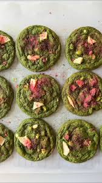

This weeks first baking recipe is Strawberry Matcha cookies. A chewy matcha cookie with white chocolate chips, with freeze dried strawberries!
165g unsalted butter 90g dark brown sugar 145g granulated sugar 1 egg & 1 egg yolk 1/2 tbsp bourbon vanilla bean paste 200g all purpose flour 12g cornstarch 12g matcha Pinch of salt 1/2 cup white chocolate chips 1/2 cup crushed freeze dried strawberries
In a bowl, add in the softened butter. Use a hand mixer to mix until fluffy. Then add in your sugars and mix again until light and fluffy Add in the vanilla & egg and egg yolk. Beat until the mix is nice and smooth. In another bowl, whisk together flour, baking soda, cornstarch, pinch of salt and matcha powder. Add the dry ingredients to the wet and use a spatula to fold everything Add in the cream cheese & white chocolate chips & freeze dried strawberries. Mix again Preheat oven to 350 degrees. Place about 2oz of cookie dough onto a parchment lined pan. Bake for about 11 minutes!